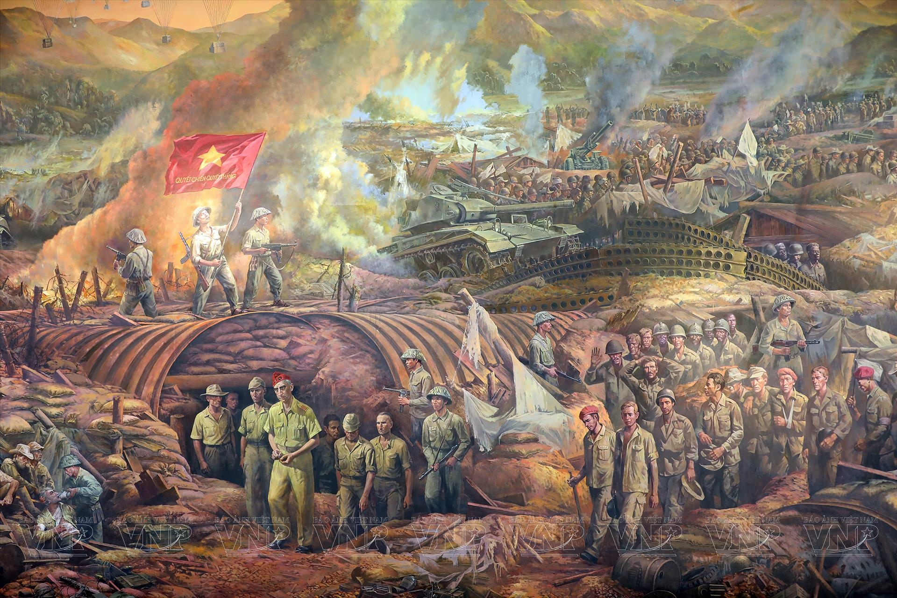
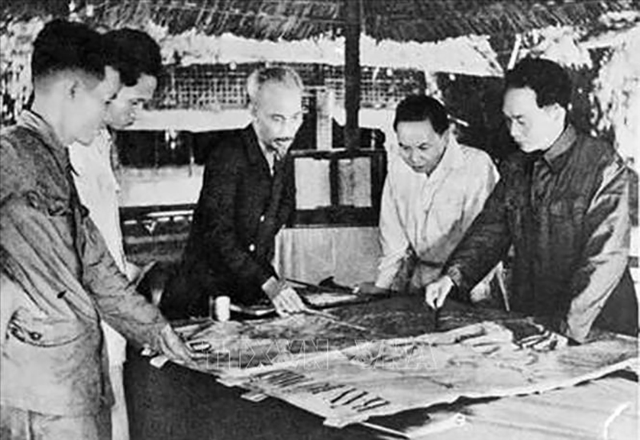
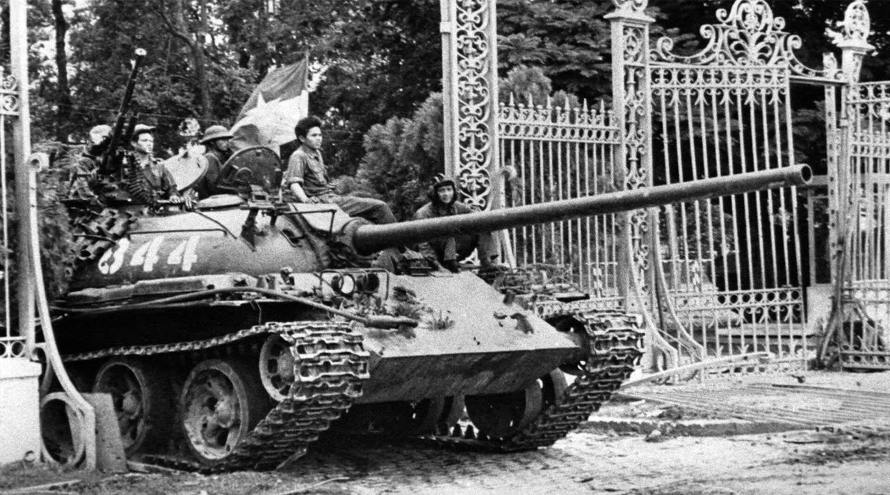
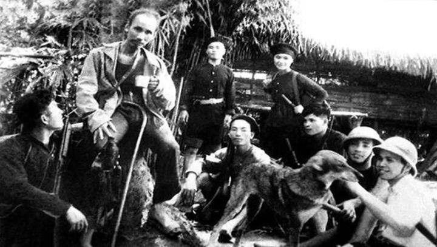

Vietnam has a long and remarkable history that spans more than four thousand years. Throughout its history, the Vietnamese people have faced many challenges, including foreign invasions and difficult periods of war. Despite these hardships, they always showed great courage, determination, and unity to protect their homeland and preserve their national identity. Many important historical events have become symbols of Vietnam's strong spirit, such as the Battle of Bach Dang, the August Revolution in 1945, the Dien Bien Phu Victory in 1954, and the Reunification of Vietnam in 1975. These milestones not only changed the course of the nation's history but also inspired generations with the values of patriotism, sacrifice, and resilience.This historical photo exhibition presents a collection of images that capture memorable moments, famous historical sites, and national heroes who contributed to Vietnam's independence and peace. Through these photographs, visitors can gain a deeper understanding of the country's past, appreciate the sacrifices made by previous generations, and recognize the importance of preserving peace for the future.History is not only a record of the past but also a valuable lesson for the present and future. We hope this exhibition encourages everyone to learn more about Vietnam's rich history and to respect the courage and determination of the people who helped build the nation we know today.


This historic photograph shows President Ho Chi Minh working closely with military commanders during the resistance war. By carefully studying maps and discussing strategic plans, they prepared important military operations that contributed to Vietnam's fight for independence. Ho Chi Minh's leadership, wisdom, and dedication inspired both soldiers and civilians throughout the struggle. The image reflects the unity, determination, and strong spirit of the Vietnamese people in protecting their homeland and achieving national freedom.

This historic photograph captures one of the most unforgettable moments in Vietnamese history. On April 30, 1975, a tank of the People's Army of Vietnam entered the gates of the Independence Palace in Saigon, marking the end of the Vietnam War and the reunification of the country. This victory was the result of many years of determination, sacrifice, and unity by the Vietnamese people. It brought peace to the nation and opened a new chapter of reconstruction and development. Every year, April 30 is celebrated as Reunification Day, reminding people of the courage and resilience shown by previous generations. This event remains a powerful symbol of national pride, independence, and the desire for lasting peace.

This photograph shows President Ho Chi Minh together with Vietnamese revolutionaries during the struggle for national independence. Ho Chi Minh was not only the founder of modern Vietnam but also a respected leader who inspired millions of people with his vision, wisdom, and determination. During difficult times, he worked closely with his comrades to plan important strategies and encourage the people to fight for freedom and justice. The unity and cooperation shown in this image represent the strong spirit of the Vietnamese nation. Today, this historic photograph reminds younger generations of the sacrifices made by their ancestors and encourages everyone to value peace, independence, and the responsibility of protecting and developing the country for the future